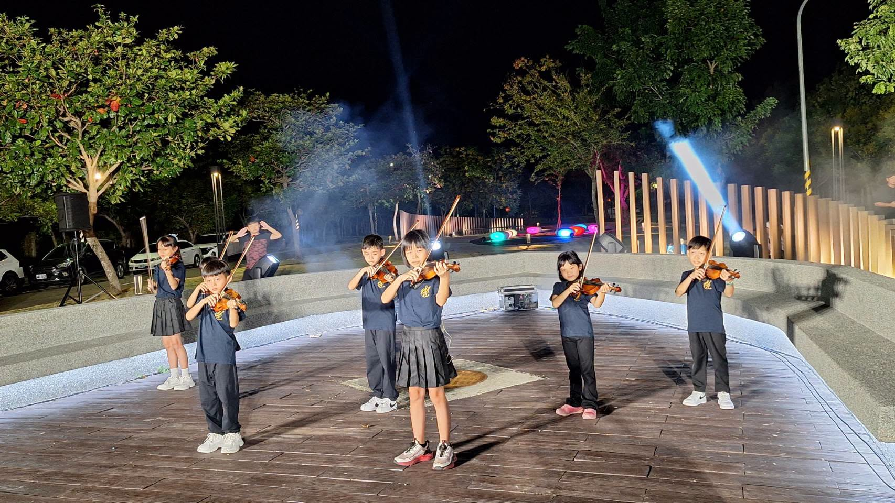
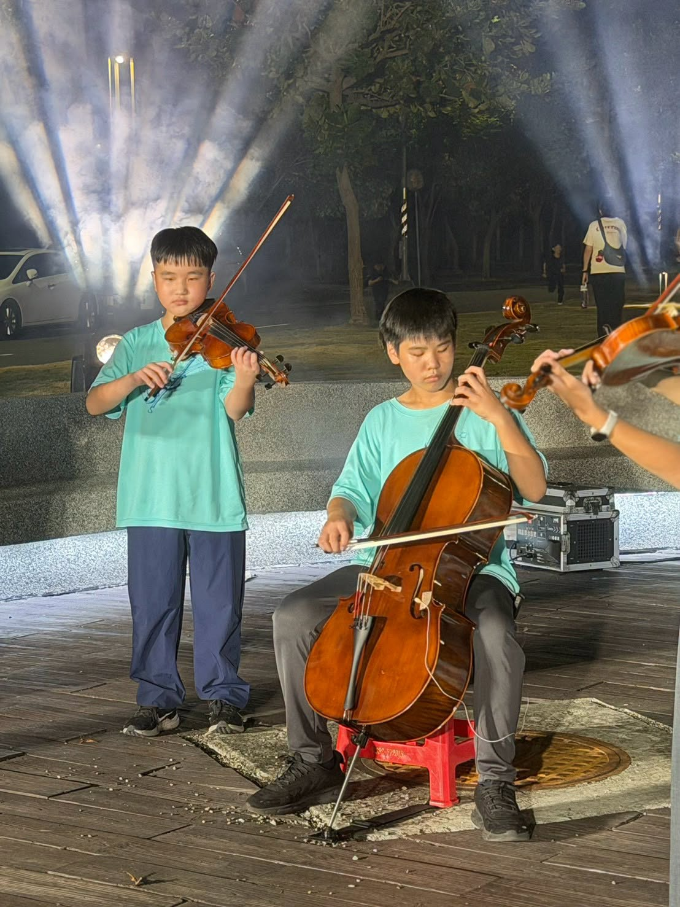

Tonight the Hsinmin String Orchestra was invited to the opening ceremony of the Tianzhong "Dreams Come True" Corridor, adding beautiful notes to a moment full of hope and blessing. 🎶
This time the 114 ensemble, the 112 ensemble, and the competition ensemble took the stage together — each carrying different feelings, but all with the same serious attitude.
- 114團Their first invited performance — fully prepared. From the moment they heard about the show, the youngest players practiced hard under their teachers' and parents' reminders: tuning the instruments, tidying their uniforms, taking their places. Nervous, of course — but even more excited. Watching them go from a little uneasy to fully focused the instant they stepped up, that "I can do this!" look, was something to be proud of.114團第一次受邀參與正式公開典禮演出，孩子們從得到消息開始就認真練習，從調音整琴、整理服裝到就位準備，每個細節都學著認真看待。第一次站上這樣的舞台，緊張一定有，但更多的是期待。
- 112團 · 比賽團Calm and unhurried — but never casual. The older players carried the ease that comes with stage experience. Don't be fooled by how relaxed they looked, though: not one bit of the practice or the details was skipped. Because they know that stage experience brings composure, but only a serious attitude makes every performance shine.有了更多舞台經驗的學長姐，多了幾分從容與淡定，但該有的練習、該注意的細節一樣都沒有少。舞台經驗讓人從容，認真的態度才能讓每一次演出都精彩。


第一次登台的小團員，與已站過許多舞台的學長姐
Whether it was a first-timer or a player who has stood on many stages, every performance deserves whole-hearted preparation. Tonight we heard more than beautiful melodies — we saw the shape of growth itself: from nervous to composed, from green to seasoned. 🎶
Special thanks to the Tianzhong Township Office for the invitation, giving the Hsinmin String Orchestra the chance to be part of this meaningful moment and to meet people through music beyond the school gates. Thank you, too, to the parents who drive, wait, sit through rehearsals, and give up their weekends so their children can step onto the stage with peace of mind. And thank you to our hard-working directors, and to teachers Lai Yu-hsing, Ling-chun, and Chia-jung for correcting, accompanying, and encouraging the children again and again, so they learn persistence and growth through music.
🎻 114團的第一次，我們嚴陣以待，用心學習。
🎻 112團、比賽團，經驗再多，認真依然是我們的態度。
【田中夢想成真廊道啟用典禮－－新民弦樂團，用音樂為夢想揭幕】✨
今晚，新民弦樂團受邀來到「田中夢想成真廊道啟用典禮」，用一首首樂曲，為這個充滿期待與祝福的時刻增添美好的音符。🎶
這一次，114團、112團以及比賽團一起登上舞台，各自帶著不同的心情，卻有著一樣認真的態度。
🎻 114團－－第一次受邀演出，嚴陣以待！
對114團的小團員們來說，這是一次很特別的經驗。第一次受邀參與正式的公開典禮演出，孩子們從得到演出消息開始，就在老師、家長的叮嚀下認真練習，從調音整琴、整理服裝、就位準備……每個上場小細節，他們都在學習著認真看待。
第一次站上這樣的舞台，緊張是一定的，但更多的是期待。看著孩子們從有些忐忑，到一站上舞台便專注演奏，那份「我可以做到！」的模樣，真的讓人感到驕傲。❤️
🎻 112團、比賽團－－老神在在，卻從不輕忽每一次演出！
有了更多舞台經驗的學長姐，果然多了幾分從容與淡定，準備起來有種「老神在在」的氣勢😎 但別看他們好像很輕鬆，該有的練習、該注意的細節，一樣都沒有少。因為他們知道——舞台經驗讓人從容，認真的態度才能讓每一次演出都精彩。
不管是第一次登台的小團員，還是已經站過許多舞台的學長姐，每一次演出，都值得全心準備、認真對待。今晚，看見的不只是孩子們演奏的美妙旋律，更看見了～～從緊張到從容、從青澀到成熟的成長軌跡。🎶
特別感謝田中鎮公所的邀請，讓新民弦樂團有機會參與「夢想成真廊道」這個充滿意義的時刻，也讓孩子們有更多機會走出校園、站上不同的舞台，用音樂與大家相遇。
更要謝謝一路陪伴孩子們的家長們❤️，一次次接送、等待、陪練，甚至犧牲假日，只為了讓孩子能安心站上舞台。謝謝辛苦的總監們，總是帶著孩子們往前走；也謝謝用心指導的賴昱興老師、玲君老師及佳容老師，一次又一次地修正、陪伴、鼓勵，讓孩子在音樂裡學習堅持與成長。
Tap 🔊 to listen · 點喇叭聽發音
The school orchestra played at the opening ceremony.學校樂團在啟用典禮上演出。
They perform together on an outdoor stage at night.他們在夜晚的戶外舞台一起演出。
Standing on a stage for the first time takes courage.第一次站上舞台需要勇氣。
The players rehearse many times before a show.團員在演出前排練很多次。
Experience helps players feel confident on stage.經驗讓團員在台上更有自信。
The audience gave the children warm applause.觀眾給了孩子們溫暖的掌聲。
Match the word to its meaning
把英文和中文配對
Matched 配對成功：0 / 6